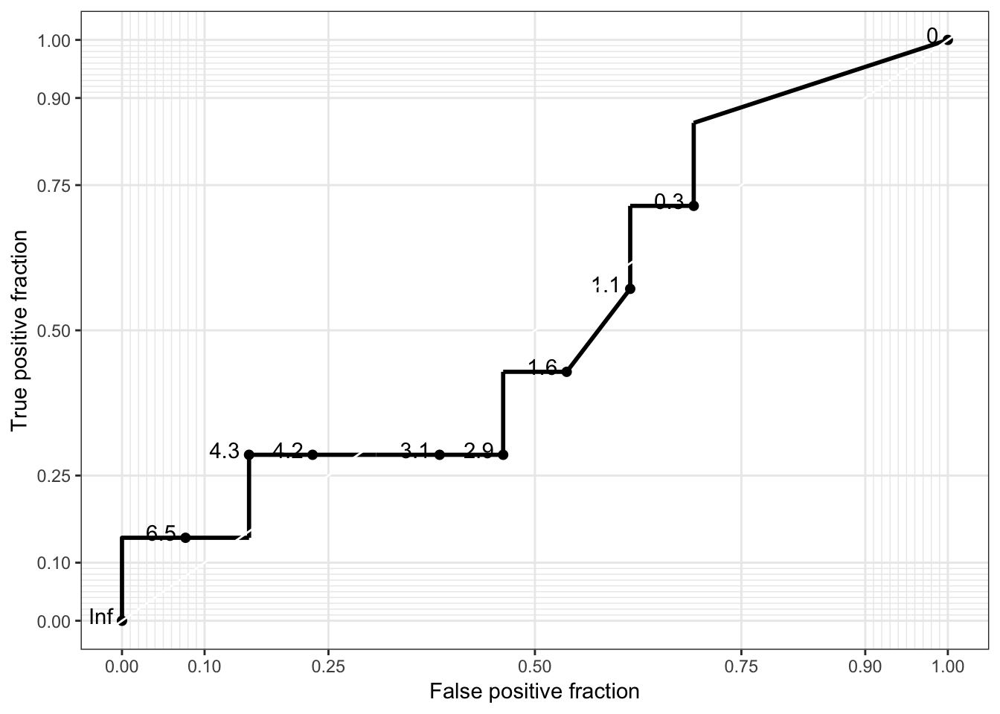

Chapter 3 Probability
3.1 Table of confusion
A table of confusion is a table with 2 rows and 2 columns that reports the number of false positives, false negatives, true positives, and true negatives. Rows represent a prediction outcomes such as a test result and columns represent outcomes of the condition being predicted such as a disease state.
# Import dataset
load("docs/Example-data.Rda")
# Create a table of confusion
BonyLesions <- ifelse(data$BonyLesions != "0" , "Abnormal", "Normal")
MProtein <- ifelse(data$MProtein > 0 , "Abnormal", "Normal")
table(MProtein, BonyLesions) BonyLesions
MProtein Abnormal Normal
Abnormal 9 6
Normal 4 1Sensitivity and specificity to assess the quality of a test. Positive and negative predictive values to interpret the results of the test.
3.2 Sensitivity
Sensitivity is the ability of a test to correctly classify an individual as having a disease. It is defined by the probability of having a positive test when the disease is present: \[{\frac{True\ positives}{True\ positives + False\ negatives}=\frac{True\ positives}{Number\ with\ condition}}\]
# Calculate sensitivity
library(caret)
sensitivity(factor(MProtein), factor(BonyLesions)) # sensitivity(prediction,truth)[1] 0.69230773.3 Specificity
Specificity is the ability of a test to correctly classify an individual disease free. It is defined by the probability of having a negative test when the disease absent: \[{\frac{True\ negatives}{True\ negatives + False\ positives}=\frac{True\ negatives}{Number\ without\ condition}}\]
# Calculate specificity
library(caret)
specificity(factor(MProtein), factor(BonyLesions)) # specificity(prediction,truth)[1] 0.14285713.4 Postitive predictive value
Positive predictive value is the percentage of patients with a positive test who actually have the disease. It is defined by the probability of having the disease when the test is positive: \[{\frac{True\ positives}{True\ positives + False\ positives}=\frac{True\ positives}{Postive\ predictions}}\]
# Calculate postitive predictive value
library(caret)
posPredValue(factor(MProtein), factor(BonyLesions)) # posPredValue(prediction,truth)[1] 0.63.5 Negative predictive value
Negative predictive value is the percentage of patients with a negative test who do not have the disease. It is defined by the probability of not having the disease when the test is negative: \[{\frac{True\ negataives}{True\ negatives + False\ negatives}=\frac{True\ positives}{Negative\ predictions}}\]
# Calculate negative predictive value
library(caret)
negPredValue(factor(MProtein), factor(BonyLesions)) # negPredValue(prediction,truth)[1] 0.23.6 ROC curve
The receiver operating characteristics (ROC) curve is a plot of the true positive rate versus (sensitivity) versus the false positive rate (specificity) of a screening test. Each point on the curve corresponds to different cutoff points used to designate a positive test. The area under the curve is an estimate of the accuracy of the test.
library(plotROC)
library(ggplot2)
ggplot(data.frame(BonyLesions, MProtein = data$MProtein), aes(d = BonyLesions, m = MProtein)) +
geom_roc() +
style_roc()
# Calculate area under the curve
calc_auc(
ggplot(data.frame(BonyLesions, MProtein = data$MProtein), aes(d = BonyLesions, m = MProtein)) +
geom_roc()
) PANEL group AUC
1 1 -1 0.5219783.7 Baysian inference
Frequentist inference is a type of statistical inference that draws conclusions from sample data by emphasizing the frequency or proportion of the data. Bayesian inference is an alternative method of statistical inference in which Bayes’ theorem is used to update the probability for a hypothesis as more evidence or information becomes available. It is given by the following formula: \[Baye's\ theorem = {Pr({A|B})=\frac{Pr(B|A)\times Pr(A)}{Pr(B)}}\] where \({Pr({A|B})}\) the likelihood of event \({A}\) occurring given that \({B}\) is true, \({Pr({B|A})}\) the likelihood of event \({B}\) occurring given that \({A}\) is true, and \({Pr({A)}}\) and \({Pr(A)}\) are the probabilities of observing A and B independently of each other. Bayesians conceive of two types of probability, a prior probability of an event which is the best guess by the observer in the absence of data, and a posterior probability which is the likelihood that an event will occur after collecting some empirical data.